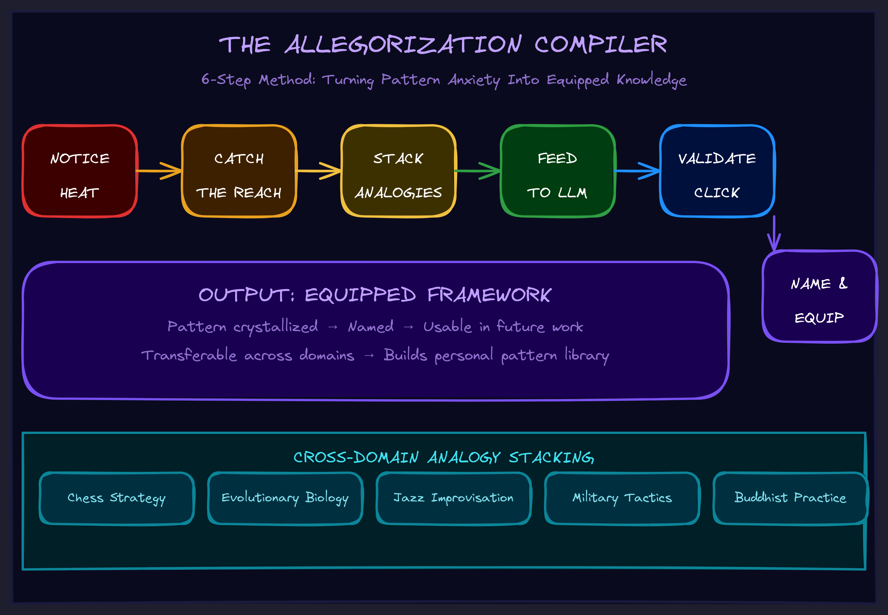

May 2026Level 1 · PromptsNaming & vocabulary
The Allegorization Compiler
How to forge the framework you need when nobody has invented it yet — using analogies from completely unrelated domains and an LLM as a pattern-collapse engine.

The Problem That Has No Name
You're drowning in complexity. Something is wrong with how your system works — your team, your architecture, your business — and you can feel it, but you can't name it.
You go to an AI for help. You describe the problem. The AI gives you generic advice because you don't have the vocabulary to explain what's actually broken. "It's drifting" gets you "have you tried better documentation?" Thanks.
You search for frameworks. You read blog posts. Nothing fits. The thing you need doesn't have a name yet. Nobody has written the framework for your specific failure pattern.
You can't discuss what you can't name. And you can't name what hasn't been collapsed into words yet.
This is the unlabeled-thing problem. Your brain is doing something sophisticated — pattern-matching across situations, reaching for structure — but it's pre-linguistic. The insight exists below the surface. It hasn't been compiled into vocabulary yet.
Every executive has been here. The board deck that doesn't land because the real issue has no industry term. The architecture review where everyone agrees something is off but nobody can point to what. The strategy session that produces generic recommendations because the specific structural failure has no name.
The Discovery
I was building an AI agent system. The architecture kept losing coherence — the AI would drift from its mission, start doing things I didn't ask for, and slowly become useless. I couldn't talk to the AI about this problem because "it's drifting" produced nothing useful.
Then I noticed something about my own behavior. When I was stuck, I was unconsciously seeking catharsis in extreme environment content — Everest expeditions, U2 reconnaissance flights, wingsuit jumps. I was binging this stuff for hours. Not because it was relaxing. Because it felt like my situation.
That's when I caught myself: my brain was already doing the work. It was collecting analogies from completely unrelated domains. Not consciously thinking "this is like that" — just scanning structures abstractly, sorting the climber from the equipment from the coordinator.
Pre-linguistic pattern-matching. My mind was reaching for something it couldn't yet name.
The insight: if my brain is already triangulating across domains, maybe the LLM can collapse the pattern into words for me.
How It Works
I fed Claude three analogies: "What structure do Everest expeditions, fighter jet missions, and wingsuit jumps share?"
The AI triangulated instantly. From the transcript:
"Your brain's zooming in on system-of-systems, not just 'wow, vibes.' One human doing something 'simple' on top of a ridiculous amount of invisible infrastructure."
It found the universal: every extreme environment has a Pilot (moment-to-moment navigation), a Vehicle (execution layers), Mission Control (coordination keeping alignment), and Interaction Loops (how components communicate).
I knew immediately it was right. Not because I could prove it — because it clicked. The unlabeled thing I'd been reaching for suddenly had names.
That framework became SOSEEH — reusable cognitive equipment for decomposing any coordination problem in about two minutes. Fill in the four slots. When one is blank, you've found the bug.
The first thing I checked: "Where's my mission control?"
Answer: I didn't have one. Nothing in my architecture periodically checked whether the AI was still on mission. That's why drift was inevitable. I fixed the structure. Drift stopped.
The Method
Here's the repeatable process — what I now call the Allegorization Compiler:
1. Notice the heat
Complexity anxiety has a feeling. White-screening, tab-switching, the urge to watch YouTube instead of working. That feeling is not procrastination. It's your brain signaling that the problem has no vocabulary yet.
2. Catch the reach
Notice what content you're reaching for as catharsis. What domains feel like your situation? The discomfort is data. Ask: "What am I reaching for?"
3. Stack analogies from different domains
Collect three or more examples from completely unrelated fields that share the failure pattern you're feeling. This is the critical step — and it's counterintuitive.
If you're debugging a software problem and you pick three software examples, the LLM finds software patterns. You already know those. That's why the first attempt failed:
BAD STACK (same domain): Chatbots that forget context AI that hallucinates Language models that lose coherence → Output: "attention/memory limitations" → Useless. Already knew that. GOOD STACK (domain variance): Everest expedition losing radio contact Orchestra that can't hear the conductor Assembly line with downstream QA failures → Output: "coordination layer that keeps components aligned" → Universal. Became "mission control."
Domain variance forces the LLM to find what's actually shared, not what's domain-specific. Physical systems, coordination systems, temporal systems — the discomfort of reaching outside your field is the point.
4. Feed to LLM and triangulate
The prompt is simple: "What structure do [X], [Y], [Z] share?"
The AI has seen patterns across all domains. You're using it as a pattern-collapse engine — something that can find the universal bones that appear across wildly different situations.
5. Validate by click, not proof
When the output lands, you know. Not because you can prove it's correct — because the unlabeled thing suddenly has a name and you recognize it. If it doesn't click, your stack was too narrow. Add more domain variance and try again.
6. Name and equip
The universal becomes vocabulary. You can now discuss what you couldn't name before. The framework becomes equipment — a reusable cognitive tool you can apply in two minutes to any problem of that type.
Why This Is Not Just "Prompting"
The natural objection: "You're just asking the AI a clever question."
No. Here's the structure:
- Your brain provides analogical isomorphisms — structural correspondences it detected pre-linguistically
- The AI collapses them into named structure
- That structure becomes a shared metalanguage between you and the AI
- Now both of you speak the same compressed language
- Every future interaction is automatically shaped by it
The framework isn't a prompt trick. It's a semantic attractor — a piece of context that reshapes how the AI processes everything that follows. Paste the Allegorization Compiler document into a fresh Claude context and it immediately understands what "reaching," "stacking," and "triangulation" mean without being told. The framework trains the AI's attention by being in context.
"The trick here is this framework is an exact allegory that is never getting fully collapsed. You never think about instancing this framework — the background of knowing the info literally fixes the way you handle yourself with me."
This is what separates it from prompt engineering. You're not writing instructions. You're installing attractors in meaning-space. The AI doesn't follow the framework — it becomes conditioned by the framework. And so do you.
What It Produces
The Allegorization Compiler forges equipment — reusable cognitive filter sets you can apply to problems of a specific type. SOSEEH is one example. But you can forge equipment for:
- Your specific failure patterns. The thing that keeps breaking in your business has a structure. Three analogies from different domains will surface it.
- Your specific coordination problems. The reason your team keeps misaligning has a universal shape. You just haven't named it yet.
- Your specific strategic gaps. The thing your competitors don't understand about your market has structural invariants. Name them and they become weapons.
The payoff is asymmetric: one AC run produces equipment you use forever. Two minutes per application, infinite applications.
The Executive Version
You don't need to understand LLMs to use this. Here's the stripped-down version:
- You're stuck on a problem you can feel but not name.
- Think of three situations from completely different fields that feel like your situation. A mountain expedition, an orchestra, a factory floor — anything that resonates structurally.
- Ask an AI: "What structure do these three things share?"
- The AI will find the universal. It will name the parts you couldn't name.
- Map those parts back to your situation. The blank slot is the bug.
- Fix the blank slot. Problem named, problem solved.
You just forged a framework that didn't exist before. Nobody had to invent it for you. You compiled it from your own pattern-matching, using the AI as the compiler.
Why This Matters Now
Every business is about to face complexity that no existing framework covers. The AI transition isn't like digitization or cloud migration — there are no established playbooks because the technology changes what's possible faster than consultants can write frameworks.
The companies that win won't be the ones who hired the best consultant with the best existing framework. They'll be the ones who can forge their own equipment — name their own problems, build their own vocabulary, create their own compressed language for talking to AI about their specific situation.
That's what the Allegorization Compiler does. It's a framework for making frameworks. A forge for cognitive equipment. The meta-tool that produces the tools you need.
The alternative is waiting for someone else to name your problem for you. That worked when change was slow. It doesn't work anymore.